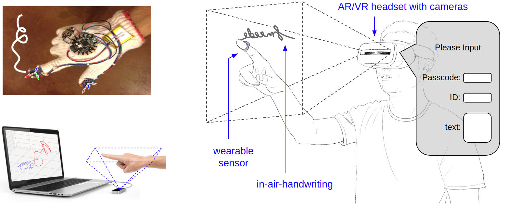
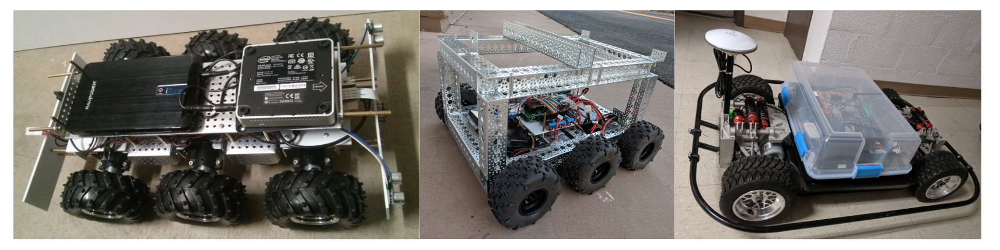

Welcome
My name is Duo Lu and I am a researcher, developer, and instructor in computer science.
Currently I study at Arizona State University (ASU) at Tempe, Arizona. I love building smart IoT systems, smart robots, and smart wearable devices with AI technologies that can sense, make decisions, and act accordingly. I'm good at software development with C/C++, Java, and Python on Linux.
Research
The main part of my current research is trying to understand in-air-handwriting and use it as an input method, potentially in Virtual Reality (VR) and Augmented Reality (AR) applications.
Consider the scenario shown in the following figure, a dialog pops up to an AR/VR user asking a passcode, an ID, or a short piece of text information (e.g., a tweet) as input information. My goal is creating technologies to allow input of information using handwriting in the air captured by cameras or wearable inertial sensors. Currently, my focus is mainly pattern recognition using deep neural network on in-air-handwriting movement data collected by the Leap Motion controller and a custom data glove with an inertial measurement unit. Here is a primitive demo video. This project is sponsored by my advisor Dr. Dijiang Huang.

Publications
-
Duo Lu, Dijiang Huang, "Systems and Methods for a Multifactor User Identification and Authentication Framework for In-Air-Handwriting with Hand Geometry and Deep Hashing", US Patent Appl. 16/781,596, 2020. (pending)
-
Dijiang Huang, Duo Lu, "Three-Dimensional In-The-Air Finger Motion based User Login Framework for Gesture Interface", US Patent Appl. 62/782,100, 2019. (pending)
-
Duo Lu, Dijiang Huang, et. al., "FMHash: Deep Hashing of In-Air-Handwriting for User Identification", International Conference on Communications (ICC 2019).
-
Duo Lu, Dijiang Huang, "FMCode: A 3D In-the-Air Finger Motion Based User Login Framework for Gesture Interface", arXiv:1808.00130, 2018.
-
Duo Lu, Dijiang Huang, Yuli Deng, Adel Alshamrani, "Multifactor User Authentication with In-Air-Handwriting and Hand Geometry", The 11th IAPR International Conference on Biometrics (ICB 2018).
-
Duo Lu, Kai Xu, Dijiang Huang, "A Data Driven In-Air-Handwriting Biometric Authentication System", International Joint Conference on Biometrics (IJCB 2017).
Other research projects I participated
-
Adel Alshamrani, Ankur Chowdhary, Sandeep Pisharody, Duo Lu, et. al., "A Defense System for Defeating DDoS Attacks in SDN based Networks", International Symposium on Mobility Management and Wireless Access (MobiWac 2017).
-
Cheng, Kun, Yuebin Bai, Yongwang Zhao, Yao Ma, Duo Lu, et. al., "HV2M: A novel approach to boost inter-VM network performance for Xen-based HVMs", Journal of Systems and Software 114 (2016).
-
Jun Xu, Jianfeng Yang, Chengcheng Guo, Yann-Hang Lee, and Duo Lu. "Routing algorithm of minimizing maximum link congestion on grid networks", Wireless Networks 21, no. 5. Springer (2015).
-
Zhongzhao Wang, Yuebin Bai, Kun Cheng, Jihong Ma, Duo Lu, Yuanfeng Peng, and Yao Ma. "BIDS: Bridgehead-Employed Image Distribution System for Cloud Data Centers", IFIP International Conference on Network and Parallel Computing. Springer (2014).
Development
Besides my research projects, I also build mobile robot vehicles and write software to drive them with a certain level of autonomy.
Smart vehicles are essentially a collection of sensors and computers on wheels. How to build an affordable smart vehicle using commercial off-the-shelf components? How to efficiently construct, deploy, maintain, reuse, and interoperate the software components on them? How to give them intelligent sensing, decision making, and acting behaviors? How to coordinate a fleet of smart vehicles through V2X communication? My goal is studying and trying to answer these questions with practical running robot vehicles made by myself. Here is a primitive demo video of three robot vehicles in a flock (collaborated with Dr. Fengchen Wang and sponsored by Dr. Junshan Zhang), and here is another primitive demo video of a teleoperate robot vehicle with real-time video streaming using a custom protocol designed by myself (sponsored by Dr. Junshan Zhang).

Publications:
-
Junshan Zhang, Duo Lu, Anirban Bhattacharya, "Systems and methods for real-time content creation and sharing in a decentralized network", US Patent Appl. 16/137,282, 2018. (pending)
-
Duo Lu, Zhichao Li, Dijiang Huang, "Platooning as a Service of Autonomous Vehicles", 4th IEEE WoWMoM Workshop on Smart Vehicles (SmartVehicles 2017).
-
Duo Lu, Dijiang Huang, Andrew Walenstein, and Deep Medhi, "A Secure Microservice Framework for IoT", IEEE Service Oriented Software Engineering (SOSE 2017).
-
Duo Lu, Zhichao Li, Dijiang Huang, et. al., "VC-bots: A Vehicular Cloud Computing Testbed with Mobile Robot", ACM MobiHoc Workshop on Internet of Vehicles and Vehicles of Internet (IoV-VoI 2016).
Teaching
I am an instructor and a teaching assistant at Arizona State University (ASU) for various computer science courses.
- Co-instructor of the Perception in Robotics (ASU CSE 598), Spring 2020.
- Instructor of the Computer Networks course (ASU CSE 434), Fall 2018, Fall 2019.
- Instructor of the Introduction to Engineering course (ASU FSE 100), Fall 2015, Fall 2016, Fall 2017.
- Mentor and sponsor of Undergraduate Capstone Project (ASU CSE 485), Spring 2016 - Fall 2016.
- Teaching Assistant of multiple undergraduate and graduate courses, Fall 2012 - Spring 2018.
Other computer science education projects I participated
-
Yuli Deng, Duo Lu, Dijiang Huang, et. al., "Knowledge Graph based Learning Guidance for Cybersecurity Hands-on Labs", ACM Global Computing Education Conference (CompEd 2019)
-
Yuli Deng, Duo Lu, Dijiang Huang, et. al., "Personalized Learning in a Virtual Hands-on Lab Platform for Computer Science Education", IEEE Frontiers in Education Conference (FIE 2018)
Hobby
I love casual road biking, swimming, hiking.